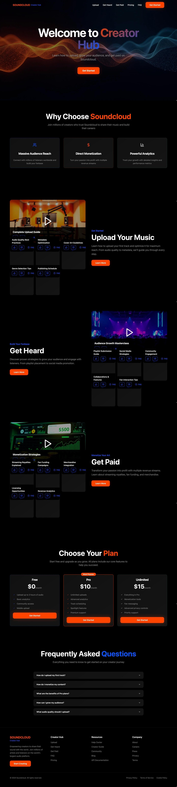
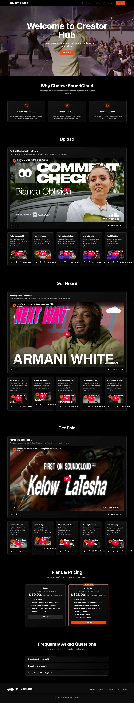
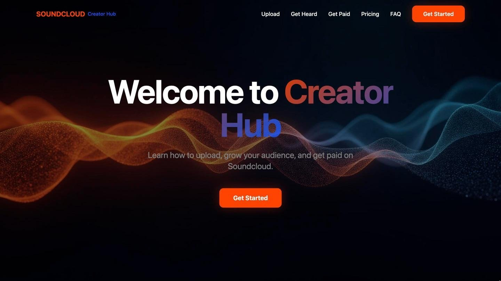
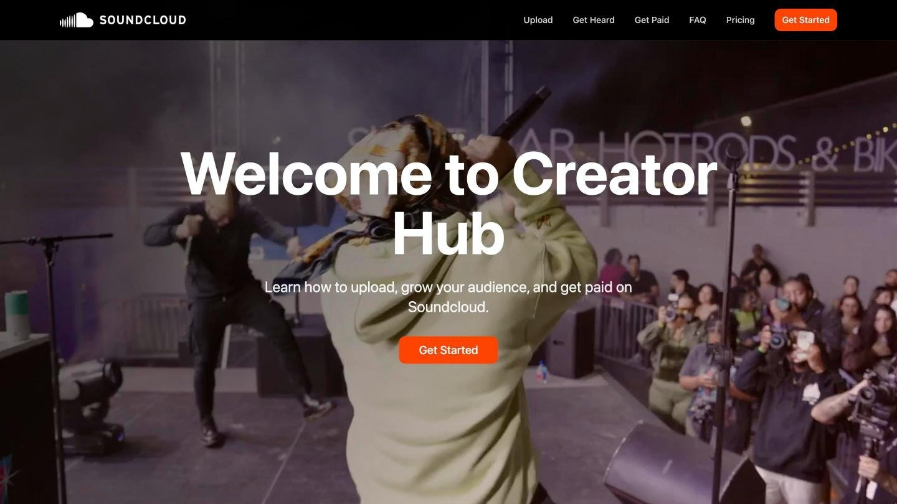
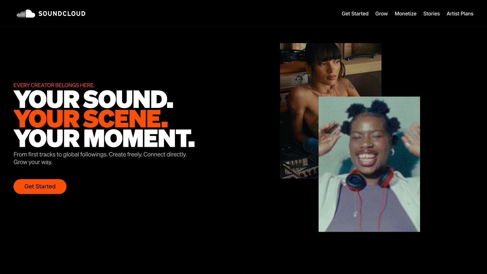
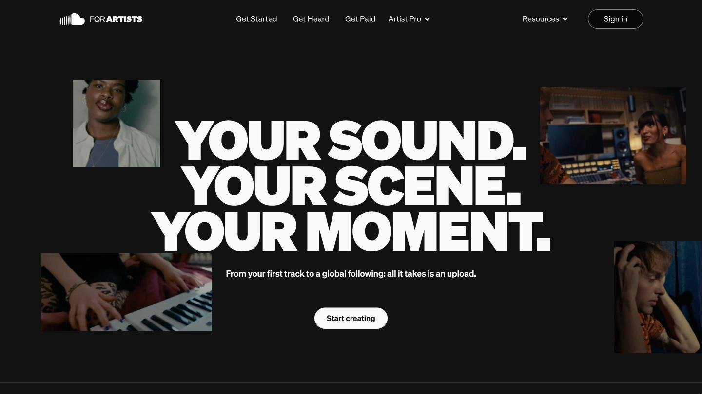
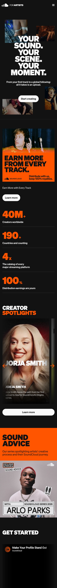

SoundCloud for Artists
Creators knew how to earn on other platforms. On SoundCloud the tools were there, but the path wasn’t. I designed the hub that lays it out, from first upload to first payout.
Context
The tools were there. The path wasn’t.
SoundCloud gives artists distribution, fan-powered royalties, fan support and merch. On most creator platforms people understand how the road to earning works. On SoundCloud, the road between those tools was hard to see.
The existing hub was a library of articles, with no clear place to start and no sense of what comes next. And the audience is Gen Z, used to apps that explain themselves in seconds.
Approach
Prototype first, so feedback is about the real thing.
Instead of wireframes, I built working prototypes in Lovable and reviewed them with the Scaled Creator Success team, design and engineering. Everyone reacted to something they could click, so the big decisions were made early, while they were still cheap to change.
Alongside, I looked at how creator platforms, short-video and streaming apps, and the learning hubs of design tools explain the way from joining to earning, and how they talk to a young audience.
The first two rounds
Round 1 asked the wrong question.
The brief pointed to a learning hub, so I built an academy: courses, levels, enrollment. Its job was to test the brief. In review it became clear that creators didn’t need a school. They needed a path inside the platform.

Round 2 found the structure.
Three steps, in the order a creator lives them: get started, get heard, get paid. Each step holds its own guides, then plans and questions. This structure carried through every later version, and it is the one live today.
- Get startedSet up a profile, upload a first track, understand how fans find music.
- Get heardDistribution, discovery and knowing who is listening.
- Get paidFan-powered royalties, merch and vinyl, direct fan support.
Round 3

From placeholders to the real product.
The third round replaced the generic parts with SoundCloud itself: the brand, photography from live shows, SoundCloud’s own videos as guides, and the real Artist and Artist Pro plans with their actual limits.
One card pattern now held every guide in all three steps, so the library could keep growing without a redesign.
Five versions




The hero of each version, from the first prototype to the live site.
Final prototype
On the new brand, with the interaction in place.
When SoundCloud’s brand changed midway, I rebuilt the hub in Framer on the new guide and made it fully interactive: a hero line that rotates over looping artist videos, big numbers as proof, real creators in quotes and stories.
The voice does as much work as the layout. Short, direct, in the second person: your sound, your scene, your moment.
- Journey over libraryContent follows what the creator is trying to do next, not a list of topics.
- Proof over promisesNumbers and real artists carry the argument.
- Voice as interfaceFor this audience, tone is part of the design.
- One card for every guideThe library grows without a redesign.
Mobile

Made for the phone first.
The audience is Gen Z, so the hub had to work first on the phone. The big type stacks, the numbers read one at a time, and every guide stays one swipe away.
Handoff
The prototype as the reference.
The interactive Framer prototype was the reference for the production build in Webflow, developed by SoundCloud’s web team. The build adapted part of the interaction layer to the implementation scope. The Framer version shown here is the full design intent.
Outcome
One path, from first upload to first payout.
Creators now find one path instead of a library: start, get heard, get paid. The card pattern designed in the third round now carries more than twenty guides across the three steps.
The process stayed smooth. By the time anything was expensive to change, the team had already agreed on it.
The hub also points to SoundCloud’s yearly data report, another project I designed: Music Intelligence Report